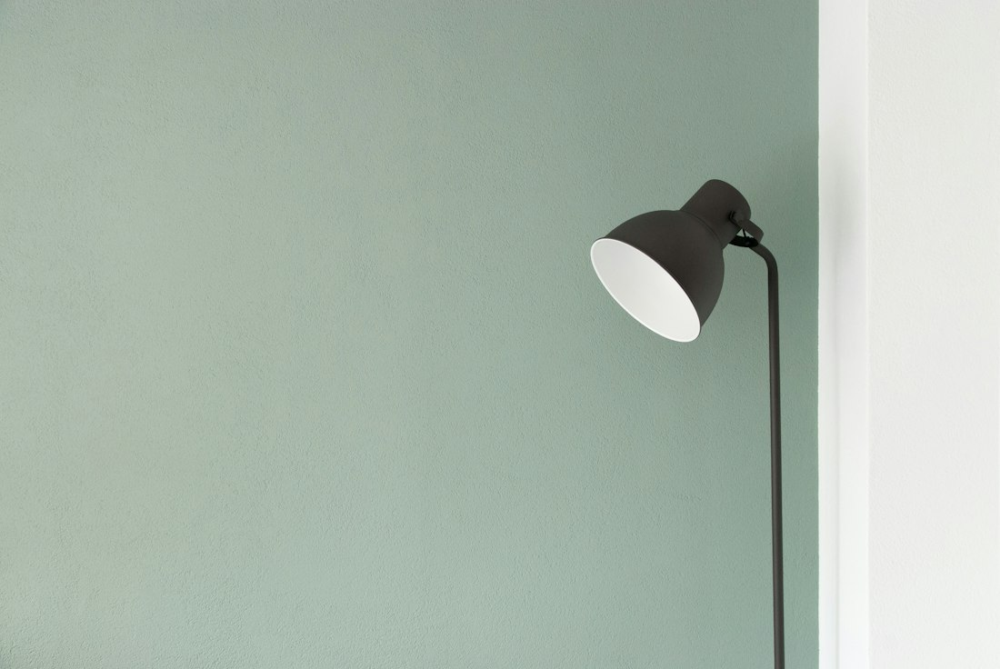

Pièces uniques
Chaque objet est unique ou très limité. Pas de production de masse, pas de doublons. Ce que vous trouvez, c'est vraiment une trouvaille.
Les objets ont une vie avant nous.
À nous d’imaginer la suite.

✳ SUIVEZ VOTRE INTUITION
Du mobilier historique aux créations artisanales, trouvez les pièces qui résonnent avec vous.
Retrouvez les collections disponibles dans les filtres du catalogue.
✳ PIÈCES REMARQUABLES
Des objets singuliers qui ont traversé le temps. Chacun raconte une histoire, attend sa suite.
Aucune trouvaille ici pour le moment. Essayez une autre recherche.
✳ NOTRE PHILOSOPHIE
Chaque objet a un passé. Peut-être soigneusement préservé, peut-être marqué par l'usage. Mais toujours vivant. Ces traces, c'est sa richesse : son histoire, son caractère, sa personnalité qui n'attend que vous.
La CAV' c'est chercher, trouver, et chérir ces pièces singulières. Les objets qui méritent de durer, on les aide à trouver leur prochaine vie. Et c'est à vous d'écrire la suite de leur histoire.
Découvrir la sélection ↗Chaque objet est unique ou très limité. Pas de production de masse, pas de doublons. Ce que vous trouvez, c'est vraiment une trouvaille.
Autant que possible, nous documentons la provenance et l'époque. Les pièces signées, estampillées ou certifiées vous offrent la transparence.
Restaurées ou patinées, nos pièces sont saines. Nous décrivons franchement leur condition : c'est la confiance qui construit notre réputation.
Pas de contrefaçon. Pour les pièces signées ou de valeur, nous demandons l'expertise. La confiance, c'est notre premier produit.
✳ CRÉATIONS CONTEMPORAINES
Aux côté des pièces historiques, nous valorisons les créations actuelles : artisans, joailliers, céramistes qui façonnent l'avenir comme on l'aimait au passé.
Bijoux en or et argent, travail de précision et d'âme.
Voir les créations ↗✳ TROIS PASSIONS
L'expérience La CAV' en trois actes simples.
Flânez parmi les univers, explorez les pièces qui captent votre attention. Pas de pression. Juste de belles choses à découvrir.
Vous trouverez votre pièce. Celle qui vous ressemble, qui complète votre intérieur, qui se porte à votre poignet. Gardez-la en favoris et imaginez.
Demain, vos objets aussi trouveront une nouvelle vie avec quelqu'un qui les aimera. Chez La CAV', chaque fin est un nouveau commencement.